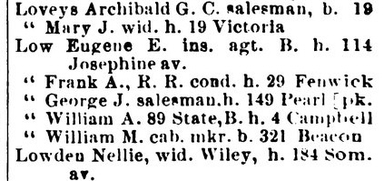
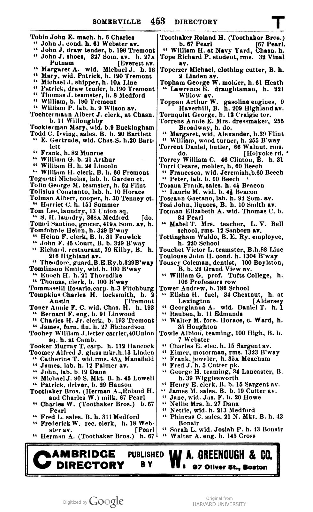
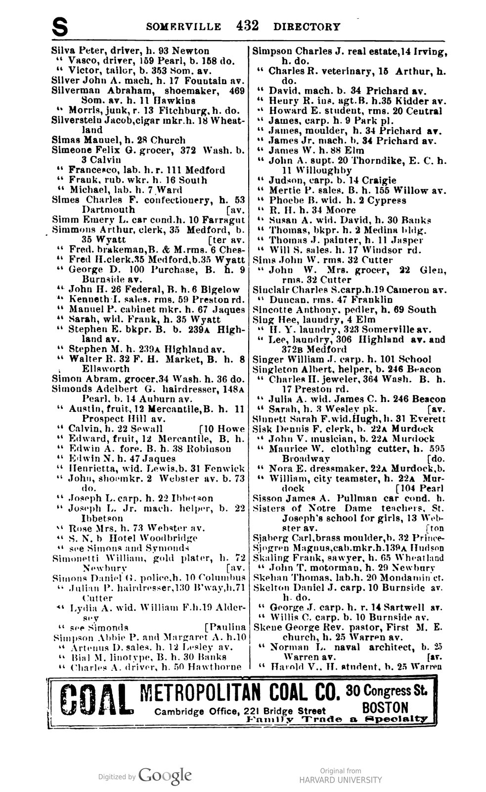

29–31 Fenwick Street is a two-family wood-frame house in the Winter Hill neighborhood of Somerville, Massachusetts. The building was constructed in 1903 as a speculative duplex during the post-1900 residential infill wave that followed the extension of Fenwick Street through to Jaques Street. It retains substantial original architectural character, including stained glass, decorative interior trim, a stone foundation, and remnants of the early heating and electrical systems installed at the time of construction.
The Somerville City Directories establish the construction date. Listings on Fenwick Street end at house number 25 in the 1900, 1901, 1902, and 1903 editions; numbers 29 and 31 first appear in the 1904 edition. Directories of this era were canvassed in the late summer and fall of the year preceding publication, so a 1904 listing means that construction was complete and the units were occupied by late 1903.
The map record corroborates this. The 1895 Bromley Atlas of Somerville shows the parcel as subdivided but vacant. The 1900 Sanborn Fire Insurance Map likewise shows the parcel unbuilt, and indicates that Fenwick Street had not yet been extended through to Jaques Street — the construction of the house in 1903 followed that extension.


Before the parcel was subdivided, the 1895 Bromley Atlas labels the entire block as the land of Edward Foote. Foote owned the land prior to the extension of Fenwick Street and the subdivision that produced the numbered lots along it.
The 1904 Somerville City Directory identifies three named residents at 29 and 31 Fenwick.
Frank A. Low, a railroad conductor, was the first head of household at 29 Fenwick. The directory's Streets section lists him at the address, and his alphabetical entry reads “Low Frank A., R. R. cond. h. 29 Fenwick.”

Heinn F. Tomfohrde, a clerk working in Boston, was the first head of household at 31 Fenwick. His father, also named Heinn Tomfohrde, lived nearby at 349 Broadway; the alphabetical entry for the son is indented beneath the father's in the directory.

Henrietta Simonds, the widow of Lewis Simonds, is listed as a boarder at 31 Fenwick.

29–31 Fenwick Street is a 2½-story wood-frame duplex resting on a mortared stone foundation. The form is characteristic of speculative two-family construction in Somerville's Late Industrial Period (1870–1915): a front-facing gable, an asymmetrical façade, a full-width front porch, bay projections, and original wood clapboard and shingle cladding. An earlier photograph (below) shows the building's pre-renovation exterior.


The duplex is laid out in what is sometimes called the Philadelphia style: each unit occupies a vertical slice of the building, ground to roof, rather than being stacked as flats. 29 Fenwick takes most of the first floor and a bedroom on the second; 31 Fenwick takes the remainder of the second floor and the entire third.

The interior retains substantial original character. Wide dark-stained wood casings with stepped back-banding frame the doorways and windows; scrolled decorative brackets are applied at the corners of cased openings; wainscoting lines the lower walls of the dining room, where a built-in china cabinet with glass-paned upper doors remains in place. The overall trim style is transitional Edwardian — more restrained than high-Victorian ornament, but more decorative than the simpler Craftsman work that came to dominate American interiors a decade later.


Stained glass. Two original leaded stained-glass windows remain in the house, both with non-figurative geometric and organic patterns in muted lavender, green, and aqua. One is set into the living-room wall as an accent window with a quatrefoil center motif; the other is a tall double-hung window on the stairway with vertical pointed-arch panels and banded aqua medallions. The style is characteristic of the Edwardian and early Arts-and-Crafts residential glass that became common in Boston-area middle-class housing between approximately 1905 and 1912. Installation in 1903 places these windows at the leading edge of that style's adoption.


Heating. The house is currently heated by a steam radiator system with cast-iron radiators typical of turn-of-the-century New England housing. Steam heating became common in urban residential construction between approximately 1890 and 1920 and was an established technology by 1903. The basement also contains remnants of an earlier gravity warm-air duct system — hand-formed sheet-metal ducts, partially crushed, that once ran vertically through the floor structure and have been abandoned in place. These suggest the house went through at least one major heating-system change in its early decades.


Wiring. The house was originally wired with knob-and-tube electrical, consistent with a 1903 installation. The original wiring has since been removed and replaced with modern wiring.
Plumbing. Remnants of lead service piping are present, typical of urban housing built before approximately 1920.
Foundation. The building rests on a mortared stone foundation. Stone foundations remained common in New England residential construction through the early 1900s before poured concrete became the standard; 1903 falls at the late end of stone-foundation use.

29–31 Fenwick Street was built during the post-1900 residential infill wave in Winter Hill, Somerville, immediately following the extension of Fenwick Street through to Jaques Street. The Massachusetts Historical Commission's 1980 reconnaissance survey of Somerville identifies Colonial Revival and late Queen Anne two-family houses as the predominant type produced by the city's late-19th and early-20th-century suburban growth, built along the trolley-served corridors of the Late Industrial Period (1870–1915). 29–31 Fenwick is a well-preserved example of that type, built at the leading edge of the post-extension infill on its own block.
sanborn03849_001).